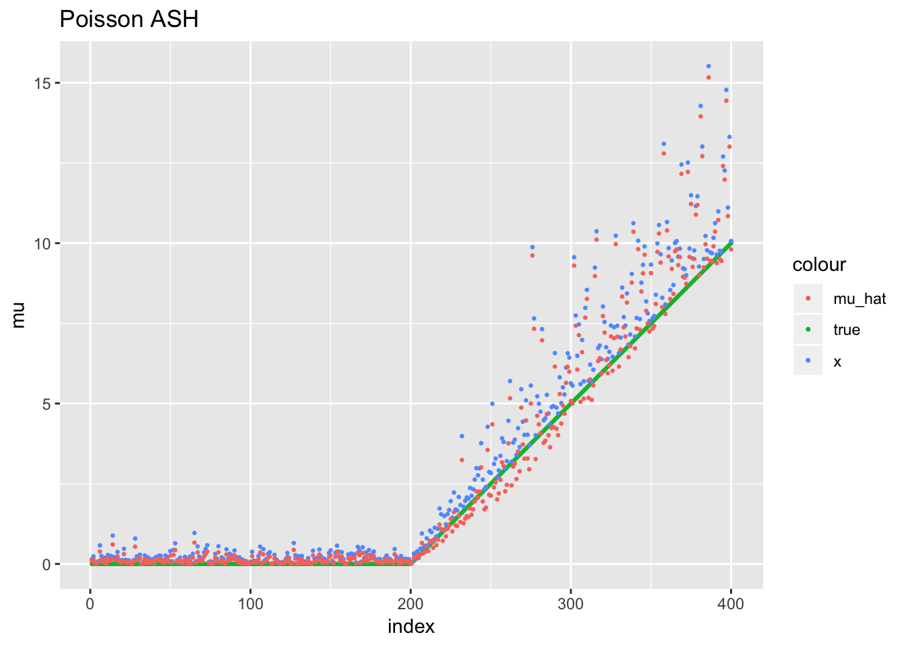
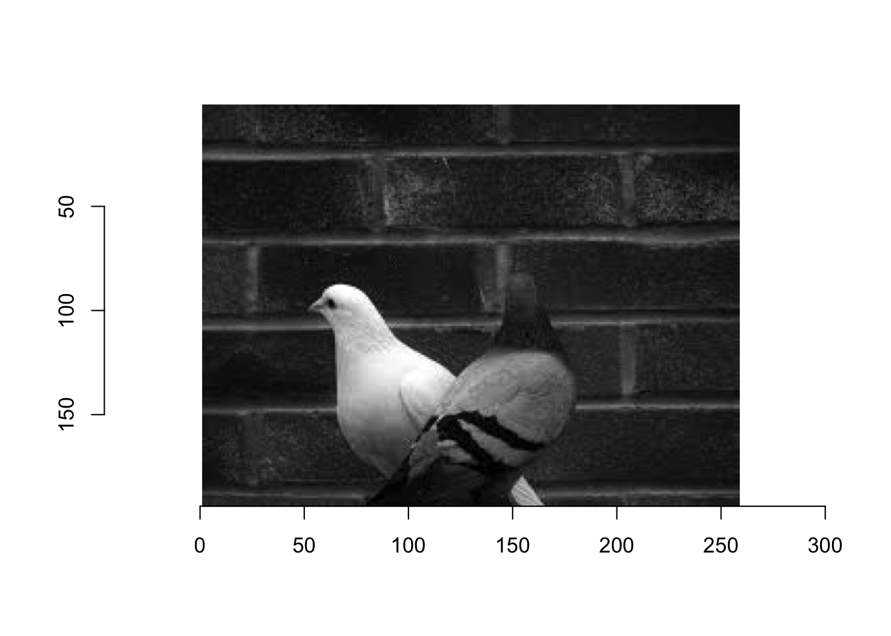
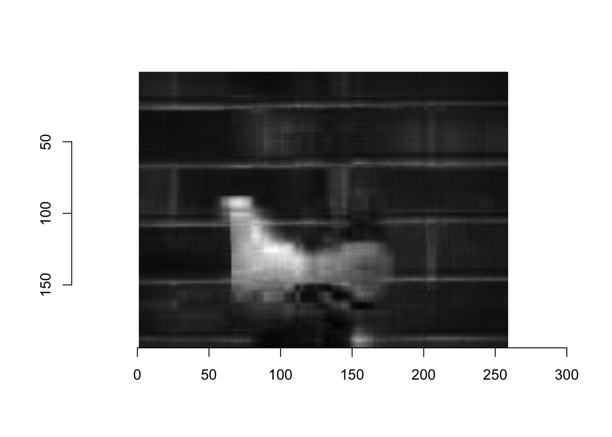
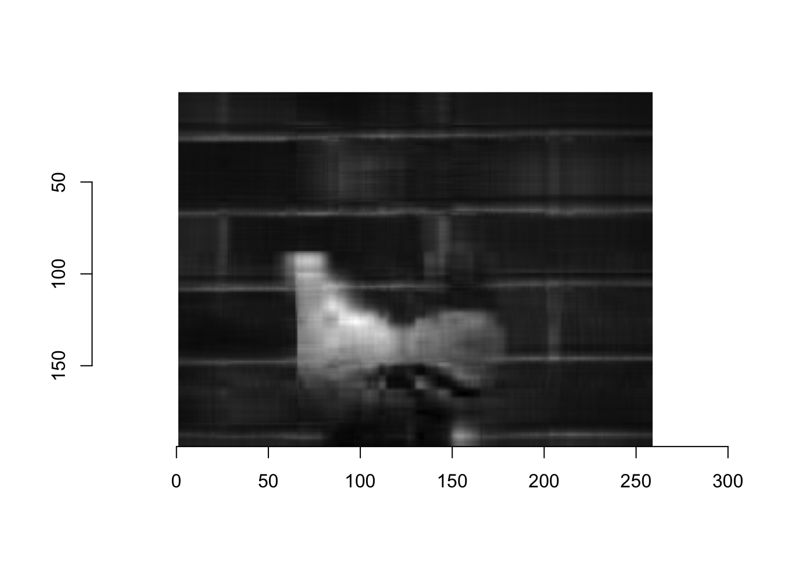

Last updated: 2018-11-07
workflowr checks: (Click a bullet for more information) ✔ R Markdown file: up-to-date
Great! Since the R Markdown file has been committed to the Git repository, you know the exact version of the code that produced these results.
✔ Environment: empty
Great job! The global environment was empty. Objects defined in the global environment can affect the analysis in your R Markdown file in unknown ways. For reproduciblity it’s best to always run the code in an empty environment.
✔ Seed:
set.seed(20181026)
The command set.seed(20181026) was run prior to running the code in the R Markdown file. Setting a seed ensures that any results that rely on randomness, e.g. subsampling or permutations, are reproducible.
✔ Session information: recorded
Great job! Recording the operating system, R version, and package versions is critical for reproducibility.
✔ Repository version: 8cee65e
wflow_publish or wflow_git_commit). workflowr only checks the R Markdown file, but you know if there are other scripts or data files that it depends on. Below is the status of the Git repository when the results were generated:
Ignored files:
Ignored: .DS_Store
Ignored: analysis/.DS_Store
Ignored: analysis/.Rhistory
Ignored: data/.DS_Store
Untracked files:
Untracked: analysis/Poisson_Dirichlet_Flash.Rmd
Here we develop a Poisson ASH. We generalize the ASH problem to exponential family, but we will restrict ourselves to Poisson verison in this note. See https://stephenslab.slack.com/files/U1UJQLMAA/FD4JJ8VMJ/sample_appendix.pdf for details.
Basically we consider
\[ x_i | \mu_i,\tau_i \sim Poisson(\tau_i\mu_i)/\tau_i \] so that \(\mathbb{E}x_i = \mu_i\) and \(\mathbb{V}\textrm{ar}(x_i) = \mu_i/\tau_i\). Note that this modeling is inappropriate for count data unless \(\tau_i = 1\). When we consider the model in above, we mainly consider the Poisson NMF problem that has continuous observations, e.g. 2-dimensional image.
We put a scale mixture of Gamma distributions
\[ p(\mu_i|\phi,\nu,t) = \sum_{k=1}^m \phi_k\cdot p(\mu_i|\nu_k,t_k) \]
\[ \mu_i|\nu_k,t_k \sim \textrm{Gamma}(t_k\nu_k + 1,t_k) \]
where \(t_k\) is a rate parameter here. When \(\nu_k = 0\) then it reduces to the exponential family \(\textrm{Exp}(t_k)\) where \(t_k\) is again a rate parameter. Any mixture component prior \(p(\mu_i|\nu_k,t_k)\) has a unique mode at \(\nu_k\). We will let \(\nu_k = 0\) for simplicity. The scale mixture prior \(p(\mu_i|\phi,t)\) is then a unimodal distribution (mode at \(0\)).
Estimation of the mixture proportions \(\phi\) can be done efficiently by mixsqp as long as we can calculate the log-partition function \(h\) (or a partition function \(H\)) of each component mixture prior.
H <- function(t, nu = 0, t_prod_nu = t * nu){
return( t^(t_prod_nu + 1) * gamma((t_prod_nu + 1)^(-1)) )
}
h <- function(t, nu = 0, t_prod_nu = t * nu){
return( (t_prod_nu + 1) * log(t) - lgamma(t_prod_nu + 1) )
}
select_grid <- function(x, tau, nv = 20){
x2_prod_tau <- x^2 * tau;
M <- 10 * max(x2_prod_tau);
logM <- ceiling(log10(M));
t <- 10^seq(-5 * logM, logM, length = nv - 1);
return(t)
}Now we solve a Poisson version ASH problem.
EFASH_poisson_test <- function(seed = 1){
# set seed
set.seed(seed)
# sample the data
mu_true <- c(rep(0,199),seq(0,10,0.05))
n <- length(mu_true)
tau <- rep(1,n)*2
x <- mu_true + (mu_true + 1) * rexp(n)/5
x_prod_tau <- x * tau
# choose grid t and mode nu
nv <- 20
t <- select_grid(x, tau, nv = nv)
nu <- 0
# compute likelihood matrix
logL <- h(t) - h(outer(t, tau, '+'), t_prod_nu = outer(t * nu, x_prod_tau, '+'))
L <- exp(t(logL) - apply(logL, 2, max))
# solve mixsqp
fit <- mixsqp(L, control = list(verbose = FALSE))
# compute posterior
nz_ind <- which(fit$x > 0);
p_nz = fit$x[nz_ind];
t_nz = t[nz_ind];
L_nz = L[,nz_ind];
L_post = t(t(L_nz) * p_nz);
L_post = L_post / rowSums(L_post);
cpm = x_prod_tau/outer(tau,t_nz,'+'); # component posterior mean
pm = rowSums(L_post * cpm); # posterior mean
df = data.frame(n = 1:n, x = x, mu_true = mu_true, mu_hat = pm)
return(df)
}Let’s see the result.
library(mixsqp); library(ggplot2)Warning: package 'ggplot2' was built under R version 3.4.4out = EFASH_poisson_test()
ggplot(out) + geom_point(aes(x = n, y = mu_true, color = "true"), cex = 0.5) +
geom_point(aes(x = n, y = x, color = "x"), cex = 0.5) +
geom_point(aes(x = n, y = mu_hat, color = "mu_hat"), cex = 0.5) +
labs(x = "index", y = "mu", title = "Poisson ASH") +
guides(fill = "color")
| Version | Author | Date |
|---|---|---|
| 07463cc | Youngseok Kim | 2018-11-05 |
library(imager)Warning: package 'imager' was built under R version 3.4.4Loading required package: magrittr
Attaching package: 'imager'The following object is masked from 'package:magrittr':
addThe following objects are masked from 'package:stats':
convolve, spectrumThe following object is masked from 'package:graphics':
frameThe following object is masked from 'package:base':
save.imageX = load.image("~/git/Peter/EFASH/data/images.png")
plot(X)
| Version | Author | Date |
|---|---|---|
| 07463cc | Youngseok Kim | 2018-11-05 |
EFASH_poisson <- function(x, tau, nv = nv){
# precalculation
x_prod_tau <- x * tau
# choose grid t and mode nu
nv <- 20
t <- select_grid(x, tau, nv = nv)
nu <- 0
# compute likelihood matrix
logL <- h(t) - h(outer(t, tau, '+'), t_prod_nu = outer(t * nu, x_prod_tau, '+'))
L <- exp(t(logL) - apply(logL, 2, max))
# solve mixsqp
fit <- mixsqp(L, control = list(verbose = FALSE))
# compute posterior
nz_ind <- which(fit$x > 0);
p_nz = fit$x[nz_ind];
t_nz = t[nz_ind];
L_nz = L[,nz_ind];
L_post = t(t(L_nz) * p_nz);
L_post = L_post / rowSums(L_post);
cpm = x_prod_tau/outer(tau,t_nz,'+'); # component posterior mean
pm = rowSums(L_post * cpm); # posterior mean
return(pm)
}X = load.image("~/git/Peter/EFASH/data/images.png")[,,1,1]EFMF_poisson <- function(X, k = 1, init = NULL, verbose = FALSE, maxiter = 100){
# set size
n = dim(X)[1];
p = dim(X)[2];
# random initialization
if (is.null(init)){
set.seed(1)
L = matrix(runif(n*k), n, k);
F = matrix(runif(p*k), p, k);
} else{
L = init$L;
F = init$F;
}
# constant structure for precision
# tau = matrix(1,n,p) * sum(L %*% t(F)) / norm(X- L %*% t(F), type = "f")^2;
# method of moments
X_hat = L %*% t(F)
tau = sum(X_hat) / norm(X - X_hat, type = "f")^2
# define function
update_F = function(X, tau, L, F, nullprior = 100){
r = dim(F)[1];
xi = tau * colSums(L);
y = F * t((t(L) %*% (tau * X / L %*% t(F))) / xi);
xi_root = t(matrix(rep(xi,r),k,r))
#fit = ash(as.vector(y),1/as.vector(xi_root), mixcompdist = "normal", nullweight = nullprior,
# outputlevel = "PosteriorMean", optmethod = "mixSQP");
fit = EFASH_poisson(as.vector(y),as.vector(xi_root))
return(matrix(fit,r,k))
}
# start loop
for (i in 1:maxiter){
L = update_F(t(X), tau, F, L, nullprior = n*p);
F = update_F(X, tau, L, F, nullprior = n*p);
X_hat = L %*% t(F)
tau = sum(X_hat) / norm(X - X_hat, type = "f")^2
if (verbose == TRUE)
cat(i,"-th iter done \n")
}
return( list( L = L, F = F, tau = tau, X_hat = X_hat ) )
}out = EFMF_poisson(X, k = 10)
plot(as.cimg(out$X_hat))
NMF_leeseung <- function(X, k = 10, verbose = FALSE, maxiter = 500){
# set size
n = dim(X)[1];
p = dim(X)[2];
# random initialization
set.seed(1)
L = matrix(runif(n*k), n, k);
F = matrix(runif(p*k), p, k);
# update function
update_F <- function(X,L,F){
return( Matrix(F * t(t(L) %*% (X / (L %*% t(F))) / Matrix::colSums(L)), sparse = TRUE ) )
}
for (i in 1:maxiter){
L = update_F(t(X),F,L)
F = update_F(X,L,F)
if (verbose == TRUE)
cat(i,"-th iter done\n")
}
return( list( L = L, F = F, X_hat = L %*% t(F) ) )
}Let’s compare this with nonnegative matrix factorization (NMF) algorithm by Lee and Seung.
out_nmf = NMF_leeseung(X)
plot(as.cimg(as.matrix(out_nmf$X_hat)))
X = read.table("~/git/Youngseok/data/topic.txt", header = FALSE, sep = ',')
X = Matrix(as.matrix(X), sparse = TRUE)
zeroind = which(rowSums(X) == 0)
X = X[-zeroind,]
colnames(X) = NULL
name = as.vector(read.table("~/git/Youngseok/data/topicname.txt", header = FALSE, sep = ',')$V1)
name[100:110] [1] "al" "algorithm" "allow" "allowed" "alt"
[6] "america" "american" "analysis" "anonymous" "answer"
[11] "answers" Now let’s see how data look like. The data matrix \(X\) is \(n = 11314\) (nonzero indices \(10907\)) by \(p = 1000\) and is very sparse.
head(X)6 x 1000 sparse Matrix of class "dgCMatrix"
[1,] . . . . . . . . . . . . . . . . . . . . . . . . . . . . . . . . . . .
[2,] . . . . . . . . . . . . . . . . . . . . . . . . . . . . . . . . . . .
[3,] . . . . . . . . . . . . . . . . . . . . . . . . . . . . . . . . . . .
[4,] . . . . . . . . . . . . . . . . . . . . . . . . . . . . . . . . . . .
[5,] . . . . . . . . . . . . . . . . . . . . . . . . . . . . . . . . . . .
[6,] . . . . . . . . . . . . . . . . . . . . . . . . . . . . . . . . . . .
[1,] . . . . . . . . . . . . . . . . . . . . . . . . . . . . . . . . . . .
[2,] . . . . . . . . . . . . . . . . . . . . . . . . . . . . . . . . . . .
[3,] . . . . . . . . . . . . . . . . . . . . . . . . . . . . . . . . . . .
[4,] . . . . . . . . . . . . . . . . . . . . . . . . . . . . . . . . . . .
[5,] . . . . . . . . . . . . . . . . . . . . . . . . . . . . . . . . . . .
[6,] . . . . . . . . . . . . . . . . . . . . . . . . . . . . . . . . . . .
[1,] . . . . . . . . . . . . . . . . . . . . . . . . . . . . . . . . . . .
[2,] . . . . . . . . . . . . . 1 . . . . 1 . . . . . . . . . . . . . . 1 .
[3,] . . . . . . . . . . . . . . . . . . . . . . . . . . . . . . . . . . .
[4,] . . . . . . . . . . . . . . . . . . . . . . . . . . . . 1 . . . . . .
[5,] . . . . . . . . . . . . . . . . . . . . . . . . . . . . . . . . . . .
[6,] . . . . . . . . . . . . . . . . . . . . . . . . . . . . . . . . . . .
[1,] . . . . . . . . . . . . . . . . . . . . . . . . . . . . . . . . . . .
[2,] . . . . . . . . . . . . . . . . . . . . . . . . . . . . . . . . . 1 .
[3,] . . . . . . . . . . . . . . . . . . . . . . . . . . . . . 1 . 1 . . 1
[4,] . . . . . . . . . . . . . . . . . . . 1 . . . . . . . . . . . . . . .
[5,] . . . . . . . . . . . . . . . . . . . . . . . . . . . . . . . . . . .
[6,] . . . . . . . . 1 . . . . . . . . . . . . . . . . . . . . . . . . . .
[1,] . . . . . . 1 . . . . . . . . . . . . . . . . . . . . . . . . . . . .
[2,] . . . . . . . . . . . . . . . . . . . . . . 1 . . . . . . . . . . . .
[3,] . . . . . . . . . 1 . . . . . . . . . . . . . . . . . . . . . . . . .
[4,] . . . . . . . . . . . . . . . . . . . . . . . . . . . . . . . . . . .
[5,] . . . . . . . . . . . . . . . . . . . . . . . . . . . . . . . . . . .
[6,] . . . . . . . . . . . . . . . . . . . . . . . . . . . . . . . . . . .
[1,] . . . . . . . . . . . . . . . . . . . . . . . . . . . . . . . . . . .
[2,] . . . . . . . . . . . . . . . . . . . . . . . . . . . . . . . . . . .
[3,] . . . . . . . . . . . . . . . . . . . . . . . . . . . . 1 . . . . . .
[4,] . . . . . . . . . . . . . . . . 1 . . . . . . . . . . . . . . . 1 . .
[5,] . . . . . . . . . . . . . . . . . . . . . . . . . . . . . . 1 . 1 . .
[6,] . . . . . . . . . . . . . . . . . . . . . . . . . . . . . . . . . . .
[1,] . . . . . . . . . . . . . . . . . . . 1 . . . . . . . . . . . . . . .
[2,] . . . . . . . . . . . . . . . . . . . . . . . . . . . . . . . . . . .
[3,] . . . . . . . . . . . . . . . . . . . . . . . . . . . . . . . . . . .
[4,] . . . . . . . . . . . . . . . . . . . . . 2 1 . . . . . . . . . . . .
[5,] . . . . . . . . . . . . . . . . . . . . . . . . . . . . . . . . . . .
[6,] . . . . . . . . . . . . . . . . . . . . . . . . . . . . . . . . . . .
[1,] . . . . . . . . . . . . . . . . . . . . . . . . . . . . . . . . . . .
[2,] . . . . . . . . . . . . . . . . . . . . . . . . . . . . . . . . . . .
[3,] . . . . . . . . . . . . . 1 . . . . . . . . . . . . . . . . . . . . .
[4,] . . . . . . . . . . . . . . . . . . 1 . . . . . . . . . . . . . . . .
[5,] . . . . . . . . . . . . . . . . . . . . . . . . . . . . . . . . . . .
[6,] . . . . . . . . . . . . . . . . . . . . . . . . . . . . . . . . . . .
[1,] . . . . . . . . . . . . . . . . . . . . . . . 1 . . . . . . . . . . .
[2,] . . . . . . . . . . . . . . . . . . . . . . . . . . . . . . . . . . .
[3,] . . . . . . . . . . . . . . . . . . . . . . . . . . . . . . . . . . .
[4,] . . . . . . . . . . . . . . . . . . . . . . . . . . . . . . . . . . .
[5,] . . . . . . . . . . . . . . . . . . . . . . . . . . . . . . . . . . .
[6,] . . . . 1 . . . 1 . . . . . . . . . . . . . . . . . . . . . . . . . .
[1,] . . . . . . . . . . . . . . . . . . . . . . . . . . . . . . . . . . .
[2,] . . . . . . 1 . . . . . . . . . . . . . . . . . . . 1 . . . . . . . .
[3,] . . . . . . . . . . . . . . . . . . . . . . . . . . . . . . . . . . .
[4,] . . . . 1 . . . . . 1 . . . . . . . . . . . . . . . 1 . . . . . . . 1
[5,] . . . 1 . . 1 . . . . . . . . . . . . . . 1 . . . . . . . . . . . . .
[6,] . . . . . . . . . . . . . . . . . . . . . . . . . . . . . . . . . . .
[1,] . . . . . . . . . . . . . . . . . . . . . . . . . . . . . . . . . . .
[2,] . . . . . . . . . 1 . . . . . . 2 . . 1 . . . . . . . . . . . . . . .
[3,] . . . . . . . . . . . . . . . . . . . . . . . . . . . . . . . . . . .
[4,] . . . . . . . . . . . . . . . . . . . . . . . . . . . . . . . . . . .
[5,] . . . . . . . . . . . . . . . . . . . . . . . . . . . . . . . . . . .
[6,] . . . . . . . . . . . . . . . . . . . . . . . . . . . . . . . . . . .
[1,] . . . . . . . . . . . . . . . . . . . . . . . . . . . . . . . . . . .
[2,] . . . . . . . . . . . . . . . . . . . . . . . . . . . . . . . . . . .
[3,] . . . . . . . . . . . . . . . . . . . . . . . . . . . . . . . . . . .
[4,] . . . . . . . . . . . . . . . . . . . . . . . . . . . . . . . . . . .
[5,] . . . . . . . . . . . . . . . . . . . . . . . . . . . . . . . . . . .
[6,] . . . . . . . . . . . . . . . . . . . . . . . . . . . . . . . . . . .
[1,] . . 1 . 1 . . . . . . . . . . . . . . . . . . . 1 . . . . . . . . . .
[2,] . . . . . . . . . . . . . . . . . . . . . 2 . . . . . . . . . . . . .
[3,] . . . . . . . . . 1 . . . . . . . . . . . . . . . . . . . . . . . . .
[4,] 1 . 1 1 1 . . . . . . . . . 1 . . . . . . . . . . . . . . . . . . . .
[5,] . 1 . . . . . . . . . . . . . . . . . . . . . . . . . . . . . . . . .
[6,] 1 . . . . . . . . . . . . . . . . . . . . . . . . . . . . . . . . . .
[1,] . . . . . . . . . . . . . . . . . . . . . . . . . . . . . . . . . . .
[2,] . . . . . . . . . . . . . . . . . . . . . . . . . . . . . . . . . . .
[3,] . . . . . . . . . . . . . . . . . . . . . . . . . . . . . . . . . . .
[4,] . . . . . . . . . . . . . . . . . . . . . . . . . . . . . . . . . . .
[5,] . . . . . . . . . . . . . . . . . . . . . . . . . . . . . . . . . . .
[6,] . . . . . . . . . . . . . . . . . . . . . . . . . . . . . . . . . . .
[1,] . . . . . . . 2 . . . . 1 . . . . . . . . . . . . . . . . . . . . . .
[2,] . . . . . . . . . . . . . 3 . . . . 1 . . . . . . . . . . . . . . . .
[3,] . . . . . . 3 . . . . . 1 . . . . . . . . . . . . . 1 . . . . . . . .
[4,] . . . . . . . . . . . . . . . . . . . 1 . . . . . . . . . . . . . . .
[5,] . . . . . . . . . . . . . . . . . . . . . . . . . . . . . . . . . . .
[6,] . . . . . . . . . . 1 . . . . . . . . . . . . . . . . . . . . . . . .
[1,] . . . . . . . . . . 1 . . . . . . . . . . . . . . . . . . 1 . . . . .
[2,] . . . . . . . . . . . . . . . . . . . . . 1 . . . . . . . . . . . . .
[3,] . . . . . . . . . . . . . . . 2 . . . . . . . . . . . . . 1 . . . . .
[4,] . . . . . . . . . . . . . . . . . . 1 . . . . . . . . . . . . . . . .
[5,] . . . . 1 . . . . 2 . . . . . . . . . . . . . . . 1 . . . . . . . . .
[6,] . . . . . . . . . . . . . . . . . . . . . . . . . . . . . . . . . . .
[1,] . . . . . . . . . . . . . 1 . . . . . . . . . . . . . . . 4 . . . . .
[2,] . . . . . . . . . . . . . . . . . . . . . . . . 1 . . . . . . . . . .
[3,] . . . . . . . . . . . . . . . . . . . . . . . . . . . . . . . . . . .
[4,] . . . . . . . . . . . . . . . 1 . . . . . . . . . . . . . . . . . . .
[5,] . . . . . . . . . 1 . . . . . . . . . . . . 1 . . . . . . . . . . . .
[6,] . . . . . . . . . . . . . . . . . . . . . . . . . . . . . . . . . . .
[1,] . . . . . . . . . . . . . . . . . . . . . . . . . . . . . . . . . . .
[2,] . . . . . . . . . . . . . . . . . . . . . . . . . 2 . . . . 1 . 1 . .
[3,] . . . . . . . . . . . . . . . . . . . . . . . . . . . . . . . . . . .
[4,] . . . . . . . . . . . . . . . . . . . . . . . . . . . . . . 1 . . . .
[5,] . . . . . . . . . . . . . . . . . . . . . . . . . . . . . . 1 . . . .
[6,] . . . . . . . . . . . . . . . . . . . . . . . . . . . . . . . . . . .
[1,] . . . . . . . . . . . . . . . . . . . . . . . . . . . . . . . . . . .
[2,] . . . . . . . . . . . . . . 1 . . . . . . . . . . . . . . . . . . . .
[3,] . . . . . . . . . . . . . . . . . . . . . . . . . . . . . . . . . . .
[4,] . . . . . . . . . . . . . . . . . . . . . . . . . . . . . . . . . . .
[5,] . . . . . . . . . . . . . . . . . . . . . . . . . . . . . . . . . . .
[6,] . . 1 . . . . . . . . . . . . . 1 . . . . . . . . . . . . . . . . . .
[1,] . . . . . . . . . . . . . . . . . . . . . . . . . . . . . . . . . . .
[2,] . . . . . 1 . . . . . . . . . . . . . . . . . . . . . . . . . . . . .
[3,] . . . . . . . . . . . . . . . . . . . . . . . . . . 1 . 1 . . . . . .
[4,] . . . 1 . . . . . . . 1 . . . . . . . . . . . . . . . . . . . . . . .
[5,] . . . . . . . . . . . . . . . . . . . . . . . . . . . . . . . . . . .
[6,] . . . . . . . . . . . . . . . . . . . . . . . . . . . . . . . . . . .
[1,] . . . 1 . . . . . . . . . . 1 . . . . . . . . . . . . . . . . . . . .
[2,] . . . . . . . . . . . . . . . . . . . . . . . . . . . . . . . . . . .
[3,] . . . . . . . . . . . . . . . . . . . . . . . . . . . . . . . . . . 1
[4,] . . . . . 1 . . . . . . 1 . . 1 . . . 1 . . . . . . . . . . . . . . 1
[5,] 1 . . . . . . . . . . . . . . . . . . . . . . . . . . . . . . . . . .
[6,] . . . . . . . . . . . . . . . . . . . . . . . . . . . . . . . . . . .
[1,] . . . . . . . . . . 1 . . 1 . . . . . . . . . . . 1 . 1 . . . . . . .
[2,] . . . . . . 1 . . . . . . . . . . . . . . . . . . . . . . . . . . . .
[3,] 1 . . . . . . . . . . . . . . . . . . . . . . . . . . . . . . . 1 . .
[4,] . . . . . . . . 1 . . . . . . . . . . . . . . . . . . . . . . . . . .
[5,] . . . . . . . . . . . . . . . . . . . . . . . . . . . . . . . . . . .
[6,] . . . . . . 1 . . . . . . . . . . . . . . . . . . . . . . . . . . . .
[1,] . . . . . . . . . . . . . . . . . . . . . . . . . . . . . . . . . . .
[2,] . . . . . . . . . . . 1 . . . . . . . . . . . . . . . . . . . . . . .
[3,] . . . . . . . . . . . . . . . . . . . . . . . . . . . . . . . . . . .
[4,] . . . . . . . . . . . . . . . . . . . . . . . . . . . . . . . . . . .
[5,] . . . 1 . . . . 1 . . . . . . . . . . . . . . . . . . . . . . . . . .
[6,] . . . . . . . . . . . . . . . . . . . . . . . . . . . . . . . . . . .
[1,] . . . . . . . . . . . . . . . . . . . . . . . . . . . . . . . . . . .
[2,] . . . . . . . . . . . . . . . . . . . . . . . . . . . . . . . . 2 . .
[3,] . . . . . . . . . . . . . . . . . . . . . . . . . . . . . . . . . 2 .
[4,] . . . . . . . . . . . . . . . . . . . . . . . . . . . . . . . . . . .
[5,] . . . . . . . . . . . . . . . . . . . . . . . . . . . . . . . . . . .
[6,] . . . . . . . . . . . . . . . . . . . . . . . . . . . . . . . . . . .
[1,] . . . . . . . . . . . . . . 1 . . . . . 1 . . . . . . . . . . . 1 . .
[2,] . . . . . . . . . . . 1 . . . . . . . . . . . . . . . . . . . . . . .
[3,] . . . . . . . . . . . 1 . . . . . . . 1 . . . . . . . . . . . . . . .
[4,] . . . . . . . . . . . . . . . . . . . . . 1 . . . . . . . . . . . . .
[5,] . . . . . . . . . . . . . . . . . . . . . . . . . . . . . . . . . . .
[6,] . . . . . . . . . . . . . . . . . . . . . . . . . . . . . . . . . . .
[1,] . . . . . . . . . . . . . . . . . . . . . . 1 . . . . . . . . . . . .
[2,] . . . . . . . . . . . . . . . . . . . . . . . . . . . . . . . . . . .
[3,] . . . . . . . . . . . . . . . . . . . . . . 1 . . . . . . . . . . . .
[4,] . . . . . . . . . . . 1 . . . . . . . . . . . . . . . . . . . . . . .
[5,] . . . . . . . . . . . . . . . . . . . . . . . . . 1 . . . . . . . . .
[6,] . . . . . . . . . . . . . . . . . . . . . . 1 . . . . . . . . . . . .
[1,] . . . . 1 . . . . . . . . . . . . . . . . . . . . . . . . . . . . . .
[2,] . . . . . . . . . . . . . . . . . . . . . . . . . . . . . . . . . . .
[3,] . . . . . . . . . . . . . . . . . . . . . . . . . . . . . . . . . . .
[4,] . . . . . . . . . . . . . . . . . . . . . 1 . . . . . . . . . . . . .
[5,] . . . . . . . . . . . . . . 1 . . . . . . . . . . . . . . . . . . . .
[6,] . . . . . . . . . . . . . . . . . . . . . . . . . . . . . . . . . . .
[1,] . . . . . . . . . . . . . . . . . . . . . . . . . . . . . . . . . . .
[2,] . . . . . . . . . . . . . . . . . . . . . . . . . . . . . . . . . 1 .
[3,] . . . . . . . . . 1 . . . . . . . . . . . . . . . . . . . . . . . . .
[4,] . . . . 1 . . . . . . . . . . . . . . . . . . . . . . . . . . . . . .
[5,] . . . . . . . . . . . . . . . . . . . . . . . . . . . . . . . . . . .
[6,] . . . . . . . . . . . . . . 1 . . . . . . . . . . . . . . . . . . . .
[1,] . . . . . 1 . . . . . . . . . . . . . .
[2,] . . . . . . . . . . . . . . . . . . . .
[3,] . 1 . . . . . . . . . . . . . . . . . .
[4,] . . . . . . . . . . . . . . . 1 . 1 . .
[5,] . . . . . . . . . . . . . . . . . . . .
[6,] . . . . . . . . . . . . . . . . . . . .Now we run a naive NMF algorithm.
out2_nmf = NMF_leeseung(X, k = 10, maxiter = 30)
topic_est = matrix(0,10,10)
F_norm = t(t(out2_nmf$F) * colSums(out2_nmf$L))
for (i in 1:10){
o = order(F_norm[,i], decreasing = TRUE)
topic_est[,i] = name[o[1:10]]
}
topic_est [,1] [,2] [,3] [,4] [,5] [,6] [,7]
[1,] "people" "10" "key" "think" "edu" "space" "year"
[2,] "don" "00" "chip" "like" "com" "file" "new"
[3,] "just" "15" "use" "know" "available" "use" "game"
[4,] "know" "20" "public" "don" "mail" "db" "team"
[5,] "like" "12" "encryption" "time" "information" "program" "good"
[6,] "think" "25" "government" "mr" "files" "output" "games"
[7,] "said" "11" "security" "going" "ftp" "entry" "play"
[8,] "ve" "14" "technology" "just" "window" "section" "season"
[9,] "didn" "16" "bit" "does" "version" "cx" "book"
[10,] "time" "17" "keys" "really" "file" "control" "best"
[,8] [,9] [,10]
[1,] "ax" "drive" "god"
[2,] "max" "thanks" "people"
[3,] "g9v" "use" "jesus"
[4,] "b8f" "card" "believe"
[5,] "a86" "problem" "does"
[6,] "pl" "windows" "law"
[7,] "145" "like" "life"
[8,] "1d9" "does" "gun"
[9,] "34u" "scsi" "say"
[10,] "1t" "know" "true" init = NMF_leeseung(X, k = 10, maxiter = 5)
out2_poisson = EFMF_poisson(X, k = 10, init = init, verbose = TRUE, maxiter = 10)1 -th iter done
2 -th iter done
3 -th iter done
4 -th iter done
5 -th iter done
6 -th iter done
7 -th iter done
8 -th iter done
9 -th iter done
10 -th iter done topic_est2 = matrix(0,10,10)
F_norm2 = t(t(out2_poisson$F) * colSums(out2_poisson$L))
for (i in 1:10){
o = order(F_norm2[,i], decreasing = TRUE)
topic_est2[,i] = name[o[1:10]]
}
topic_est2 [,1] [,2] [,3] [,4] [,5] [,6]
[1,] "people" "10" "key" "like" "edu" "file"
[2,] "don" "14" "encryption" "use" "file" "cx"
[3,] "just" "20" "chip" "know" "ftp" "output"
[4,] "know" "12" "des" "just" "com" "w7"
[5,] "think" "16" "law" "people" "available" "entry"
[6,] "like" "11" "edu" "time" "files" "chz"
[7,] "said" "15" "privacy" "don" "use" "17"
[8,] "government" "13" "bit" "god" "data" "lk"
[9,] "ve" "18" "enforcement" "think" "server" "gm"
[10,] "time" "health" "technology" "does" "window" "int"
[,7] [,8] [,9] [,10]
[1,] "00" "ax" "drive" "gun"
[2,] "game" "max" "disk" "scsi"
[3,] "team" "g9v" "16" "guns"
[4,] "10" "b8f" "card" "deleted"
[5,] "games" "a86" "55" "crime"
[6,] "25" "pl" "memory" "weapons"
[7,] "season" "145" "drives" "hard"
[8,] "000" "1d9" "drivers" "wide"
[9,] "20" "db" "pc" "fast"
[10,] "50" "0t" "hard" "mode" sessionInfo()R version 3.4.3 (2017-11-30)
Platform: x86_64-apple-darwin15.6.0 (64-bit)
Running under: macOS High Sierra 10.13.3
Matrix products: default
BLAS: /Library/Frameworks/R.framework/Versions/3.4/Resources/lib/libRblas.0.dylib
LAPACK: /Library/Frameworks/R.framework/Versions/3.4/Resources/lib/libRlapack.dylib
locale:
[1] en_US.UTF-8/en_US.UTF-8/en_US.UTF-8/C/en_US.UTF-8/en_US.UTF-8
attached base packages:
[1] stats graphics grDevices utils datasets methods base
other attached packages:
[1] imager_0.41.1 magrittr_1.5 ggplot2_3.1.0 mixsqp_0.1-69 Matrix_1.2-15
loaded via a namespace (and not attached):
[1] Rcpp_0.12.19 compiler_3.4.3 pillar_1.3.0
[4] git2r_0.23.0 plyr_1.8.4 workflowr_1.1.1
[7] bindr_0.1.1 R.methodsS3_1.7.1 R.utils_2.7.0
[10] tools_3.4.3 digest_0.6.18 evaluate_0.12
[13] tibble_1.4.2 gtable_0.2.0 lattice_0.20-35
[16] png_0.1-7 pkgconfig_2.0.2 rlang_0.3.0.1
[19] igraph_1.2.2 yaml_2.2.0 bmp_0.3
[22] readbitmap_0.1.5 bindrcpp_0.2.2 withr_2.1.2
[25] stringr_1.3.1 dplyr_0.7.7 knitr_1.20
[28] tidyselect_0.2.5 rprojroot_1.3-2 grid_3.4.3
[31] glue_1.3.0 R6_2.3.0 jpeg_0.1-8
[34] rmarkdown_1.10 purrr_0.2.5 whisker_0.3-2
[37] backports_1.1.2 scales_1.0.0 htmltools_0.3.6
[40] assertthat_0.2.0 colorspace_1.3-2 tiff_0.1-5
[43] labeling_0.3 stringi_1.2.4 lazyeval_0.2.1
[46] munsell_0.5.0 crayon_1.3.4 R.oo_1.22.0 This reproducible R Markdown analysis was created with workflowr 1.1.1